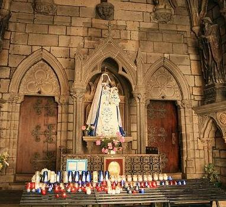
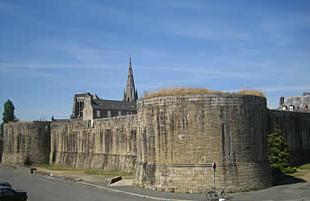
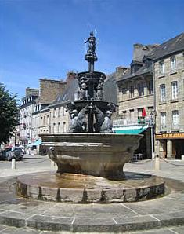
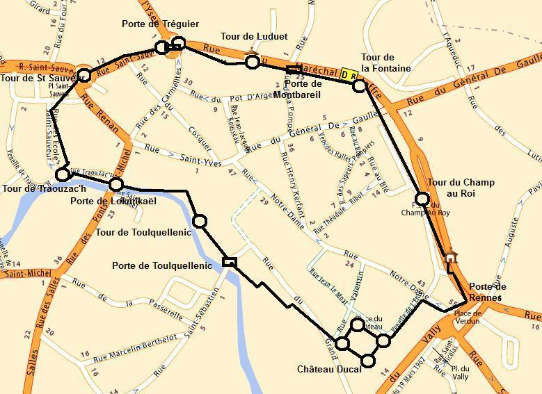
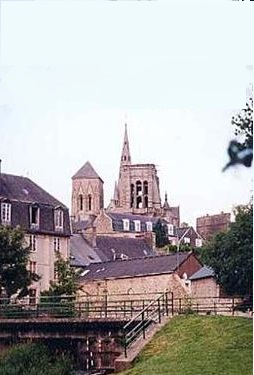
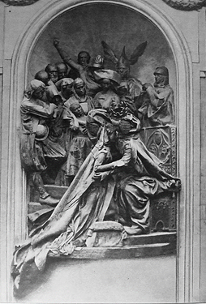

Le siège de Guingamp
The siege of Guingamp
Dialecte de Cornouaille
|
Dans l'édition de 1846, on lit "Cet événement historique [le siège de 1488] est le sujet d'un chant populaire très répandu: j'en dois une copie à l'obligeance de Madame de Saint- Prix ". Cette précision ne figure plus dans l'édition de 1867. On sait que le jeune homme rendit visite à la Dame de Traonfeunteuniou en Ploujean en juillet 1836. - la version "Saint-Prix" par Fréminville "Antiquités... des Côtes du Nord", "Sezic Guingamp", que l'on retrouve dans la collection de manuscrits de Lédan , VIII, sous le titre "Sezig Güengamp dre ar vicomp a Rohan er bloa 1500" (t.8, p. 294-300). Elle a servi de base à celle du Barzhaz. - collecté par de Penguern, t.91, folio 53 "An Dukez Annan", et publié par Al Liamm (n°35 de nov.-déc. 1952) et par Dastum, p.238-240 en 1983 - par Pol de Courcy (1814-1890), - par Jean-Marie Le Jean (1831-1876), - par Luzel, "Gwerzioù", t. 2, pp. 40 à 53: 2 versions de "Sezig Gwengamp", l'une recueillie auprès de Marie Ferchal de Guingamp par J-M. Le Jean, l'autre chantée par Marguerite Philippe, toutes deux collectées à Pluzunet. - par François Even (1877-1959) - enfin un fragment de 8 vers a été enregistré par Ifig Troadec a Minihy-Tréguier en 1980. Toutes ces versions ont été collectées en Trégor. |
 |
In the 1846 edition, La Villemarqué writes: "This historical episode [the siege of Guingamp in 1848], is referred to in a widespread folk song, for a copy of which I am indebted to Madame de Saint-Prix 's kind contribution." (left out in the 1867 edition). We know that young La Villemarqué met that lady at her Traonfeunteuniou mansion in the parish Ploujean in July 1836. - the "Saint-Prix version" by Fréminville "Antiquités... of the département Côtes du Nord", "Sezic Guingamp". The same text is to be found in the Lédan MS collection, VIII, titled "Sezig Güengamp dre ar vicomp a Rohan er boa 1500" (t.8, p. 294-300).The "Barzhaz version" is based upon it. - collected by de Penguern, t.91, folio 53 "An Dukez Annan", and published by Al Liamm (Nov-Dec. 1952 release N°35) and by Dastum, p. 238-240 in 1983. - by Pol de Courcy (1814-1890), - by Jean-Marie Le Jean (1831-1876), - by Luzel, "Gwerzioù", t. 2, pp. 40 to 53: 2 versions of "Sezig Gwengamp": one contributed by J-M. Le Jean as sung by Marie Ferchal from Guingamp; the other sung by Marguerite Philippe; both of them collected at Pluzunet. - by François Even (1877-1959) - and was recorded, as a 8 line fragment, by Ifig Troadec at Minihy-Tréguier in 1980. All these versions were collected in Trégor. |
|
Mélodie 1 collectée par Polig Montjarret (1920-2003) dans les années 1940 Chantée par Hyacinthe Mazévet dit "Sinto", né en 1865. Seziz 1 Version midi de la précédente |
Mélodie N°2 en la majeur, chantée par Marc'harid Fulup (1837 -1909). Enregistrée par François Vallée en 1900 "Barzh ar bloazvez seizh ha pevar ugent, Pa teues ar seziz war Wengamp, War borzh Roazhon ema an aotroù An Alamagned hag ar Saoz'n, War borzh Sant Mikel voa Denobre Ha war ar Blomenn an Irlanted" (Source: M.Claude Devries de l'association Strobinet: "www.bretagnenet.com/strobinet/bugelkoar/gwerziou.html") Ton 2 Arrangement MIDI de la version précédente La version du Barzhaz Breizh (en sol majeur) est donnée avec le texte breton (cliquer sur le "Gwen -ha-Du" ci-dessous). |
Mélodie 3 collectée par Polig Montjarret dans les années 1940 Chantée par Mme le Pape née en 1869. Seziz 3 Version midi de la précédente |
| Français | English |
|---|---|
|
1. - Portier, ouvrez cette porte tout grand,
Ouvrez au sire de Rohan Avec ses douze mille combattants Prêts à faire le siège de Guingamp! 2. - Ces battants demeureront fermés A quiconque voudrait entrer , Si la duchesse Anne ne le veut point, A qui cette ville en propre appartient. 3. - Vous ouvrirez ces portes, je vous dis, Au prince félon que voici! Douze mille hommes armés jusqu'aux dents, Viennent faire le siège de Guingamp. 4.- Ma porte à double tour est verrouillée, Et ma muraille crénelée. Je rougirais d'écouter ces gens-là; Guingamp est à nous. Ils ne l'auront pas. 5. Quand ils en feraient pendant dix-huit mois, Le siège, ils ne la prendraient pas. Du courage! Chargez votre canon! Et voyons qui de l'autre aura raison! 6. Car nous avons ici trente boulets, Trente boulets pour le charger; Et de la poudre. Nous n'en manquons point, Non plus que de plomb, non plus que d'étain. - 7. Le canonnier remontait dans sa tour, Quand il fut atteint à son tour D'un coup de feu tiré depuis le camp Par un homme dénommé Goazgaram. 8. La duchesse Anne alors a demandé A l'épouse du canonnier: - Grand Dieu ! Comment ferons-nous pour tirer? Voilà votre pauvre mari blessé! 9. - Quand bien même mon mari serait mort, Je peux le remplacer encor! Son canon, c'est moi qui le chargerai, Par le feu, le tonnerre, vous verrez! - 10. Oui, mais tandis qu'elle disait ces mots, La muraille vole en morceaux, Puis la porte sous le bélier céda Et la ville était remplie de soldats. 11. - A vous, soldats, les filles maintenant! Mais à moi l'or, à moi l'argent, Tous les trésors que recèle Guingamp, Et la ville elle-même, assurément! - 12. La duchesse Anne s'agenouille et prie En l'entendant parler ainsi: - Notre-Dame de Bon-Secours, Marie, Venez à notre aide, je vous supplie! - 13. Puis la duchesse Anne, ayant dit cela, S'en fut à l'église tout droit. Elle se mit à genoux éperdue A même les dalles froides et nues: 14. - Si vous laissez faire, Vierge Marie De votre temple une écurie, La sacristie sera grenier à sel Table de cuisine le maître-autel! - 15. Elle parlait ainsi quand l'épouvante S'empara des foules mouvantes: Un coup de canon qu'on avait tiré Et neuf cents assaillants étaient tués 16. C'était un vacarme des plus affreux; Les murs tremblaient à qui mieux mieux, Les cloches carillonnaient bruyamment, Sonnaient d'elles-mêmes apparemment. 17. - Page, petit page, jeune gaillard, Je te sais vif et débrouillard; Monte bien vite au haut du grand clocher, Voir qui fait ainsi les cloches sonner. 18. Une épée pend à ton côté, c'est bien. Si tu trouves là-haut quelqu'un; Si tu découvres là-haut un sonneur, Plonge-lui donc ton épée dans le cœur. - 19. Lorsqu'il montait les marches, il chantait; En redescendant, il tremblait. - Je suis allé voir les cloches qui sonnent, Mais là-haut je n'ai rencontré personne; 20. Personne, mais une chose inouïe: La très sainte Vierge Marie Que son doux fils Jésus accompagnait; Ce sont eux qui font les cloches sonner. - 21. Le prince félon aussitôt a dit A ses soldats, tout ébahis: - Sellons nos chevaux, en route, partons. Il nous faut aux saints laisser leurs maisons! - Traduction Christian Souchon (c) 2008 |
1. Gatekeeper, you must open this door!
It's Lord Rohan who stays before, With him twelve thousand soldiers have come To lay siege to Guingamp town! 2. We shall not open to you this gate, Neither to you nor to your mates, Without our Duchess Anna's leave, Ruler of this town, as we believe. 3. - Duchess, shall we open this gate To the felon prince who's in wait With the twelve thousand soldiers of his camp, That have come to lay siege to Guingamp? 4. - My doors are safe, shut with lock and key, And all my walls strong as can be. To obey them would be a shame. Guingamp is a town they shall never tame. 5. They may besiege us for eighteen months, But enter Guingamp town they won't; Just load your guns, accept toil and strain! Let's see who shall of his attempt complain! 6.- There are here thirty cannonballs in store, Aye, thirty gun balls, if not more; Neither gunpowder shall run short Nor lead to be cast, nor tin to be poured. 7. On his way back the tower he climbed up, And was injured by a gunshot A bullet that was shot from the camp By a man whose name was Gwazgaramp. 8. Duchess Anne would not cease from strife: She said to the brave gunner's wife: - My God, my God, how shall we fare? Your poor husband just now we can ill spare! 9. - Even if my poor husband were dead, I'd stand in for him, in his stead! His gun be served by no other than me, Thunder and fire! Now, you shall see! - 10. As to resist they themselves braced, The town walls fell down at one place, To battering rams the gates gave way: Soldiers, everywhere. The town was at bay! 11. - Soldiers, for you the fair girls you hold! For me the silver and the gold, And all the hoards that in Guingamp hide, And the town itself I put on my side! - 12. The Duchess, heard the talk of the town: On her knees she threw herself down: - Lady of Bon-Secours, I pray to you, I entreat you, come to our rescue! - 13. Duchess Anna, on hearing so much, Hastily ran towards the church, She threw herself down upon her knees On the altar's cold and bare stone degrees: 14. - Do you want, Virgin Mary, - could it be? -, Your house turned to stable to see? That your crypt be used as a vault for wine, Your altar as a board on which to dine? - 15. Her prayer was still going on, When panic broke out in the town, 'Cause of a gun that had been fired And nine hundred people who had died. 16. It was indeed a most dreadful shake; The houses were all made to quake, While bells were heard that rang in high tone, Rang by themselves, rang all alone. 17. - Page, little page, I wish that you might, As you are nimble, quick and light, Run to the top of the flat-roofed tower, See who sets the bells swinging with such power. 18. A good sword hangs upon your side. If up there anyone you find, Anyone who is swinging the bell, Stab him through the heart, and you shall do well! - 19. The page went up, and he did sing; But trembling downstairs he did spring. - Up the flat-roofed tower I've gone, Upstairs when I came, I've seen no one; 20. Upstairs I saw no human wight, But the Holy Virgin, that's right! The Virgin, with her holy Son, that's true Who have set the bells swinging as they do. - 21. The bad prince to his soldiers said, When this report to him was made: - Let's saddle horses, yield to restraint! For we must leave their house to the saints! - Translated by Christian Souchon (c) 2008 |
Cliquer ici pour lire les textes bretons (versions imprimée et manuscrite).
For Breton texts (printed and ms), click here.

|
Résumé
En 1489 Guingamp fut assiégée par les Français sous les ordres du Vicomte de Rohan (un Breton!). Son défenseur, Roland Gouicquet , est blessé et la ville est prise par trahison. Dès qu'il est guéri, il revient et les étrangers quittent la place. Selon la présente chanson, ce retour de fortune est du à la présence de la Duchesse Anne (non attestée par l'Histoire) et à l'intercession de ND de Bon Secours . Dans les éditions de 1839 et 1847, La Villemarqué signale qu'il descend par sa mère de l'épouse de Gouicquet, Thomine Le Moine (Tomina Al Lean) dont cette gwerz semble avoir fait la femme du canonnier. Notre Dame de Bon Secours Dans la chapelle extérieure située sous le portail Notre-Dame de la cathédrale, on vénère ND de Bon-Secours, (Itron Varia ar Gwir Zikour) une vierge noire dont l'origine est peut-être préchrétienne (ancienne déesse de la terre et de la fécondité), si l'on en juge par la procession nocturne bachique qui clôturait le pardon, le premier dimanche de juillet et qu'Emile Souvestre décrit encore en 1830. Les habitants actuels réservent leur énergie au football... Le siège de 1489 raconté par un historien breton Ces événements ont été relatés par le juriste et historien breton Bertrand d'Argentré (1519 - 1590), à la demande des Etats de Bretagne entre 1580 et 1582. Cette "Histoire de Bretaigne...: l'établissement du Royaume, mutation de ce tiltre en Duché, continué jusques au temps de Madame Anne dernière Duchesse, & depuis Royne de France, par le mariage de laquelle passa le Duché en la maison de France" sera saisie en 1582 sur l'ordre du roi Henri III et ne sera publiée, censurée, qu'en 1588. Cependant, si la version expurgée fut rééditée en 1605, 1611, 1618 et 1668, le texte de 1582 entama une carrière clandestine et fut longtemps vendu sous le manteau. Ce texte est longuement cité par La Villemarqué dans l'"argument" et les "notes" annexés au chant du Barzhaz. Les événements se situent juste après le décès du Duc François II, survenu le 9 septembre 1488. Sa fille, la Duchesse Anne, âgée de 11 ans s'est retirée avec le Maréchal de Rieux à Guérande. Contrevenant au traité de paix du Verger conclu le 19 août 1488 entre le roi et feu le duc, à la suite de la défaite de l'armée ducale à Saint Aubin du Cormier, le 28 juillet 1488, "les Français n'arrêtaient pas de piller, massacrer et ravager le plat pays comme en temps de guerre." Le 20 septembre 1488, le vicomte Jean II de Rohan du parti de France, essaye d'obtenir par négociation, le ralliement de la ville de Guingamp. Le lendemain, écrit D'Argentré, "les habitants de Guingamp firent réponse que de mettre ladite ville, ni aucune autre ville, entre ses mains, ils ne devaient le faire, ledit seigneur ne devant ignorer qu'elles fussent à la Duchesse [...] Ainsi le priaient-ils de les excuser de ne point faire d'autre réponse tant qu'ils ne connaîtraient pas les intentions de la duchesse." Et le siège est mis. Le vendredi 9 janvier 1489 apparaissent venant de Pontrieux, les premiers éléments de l'armée de France. Ils sont repoussés facilement par les défenseurs de Guingamp ...". Mais, huit jours plus tard, le dimanche 18, le gros des forces attaque le fortin Saint-Léonard et saccage le faubourg de Sainte-Croix. Le fortin est pris malgré l'héroïque résistance de Roland Gouicquet, officier de la garnison. Les troupes françaises occupent les hauteurs de Montbareil et leur artillerie entame les murailles entre les portes de Montbareil et de Tréguier. Deux assauts lancés par de Rohan le 19, échouent. Le capitaine Gouicquet fut blessé à la cuisse d'un coup de pique, à tel point qu'il fallut l'emporter et il se retira à la Roche-Derrien". Mais, le "dizainier" (commandant) Guillaume de Boisboissel voyant son infériorité en effectif négocie la reddition de la ville auprès du comte de Quintin, le frère de Rohan. Le 21 au matin, la poterne de la porte de Rennes s'ouvre devant les troupes de M. de Saint-Pierre. La garnison quitte la ville, à pied, environ ''vespres'' et la ville fut pillée du 21 janvier au 8 avril par le parti français. Deux mois plus tard Gouicquet, aidé de 1.500 Anglais, reprend la ville. D'Argentré écrit: "A la première nouvelle de l'arrivée de ce secours, la garnison de Guingamp qui était cependant forte de plus de quinze cents chevaux, jugea à propos de déguerpir et d'abandonner la ville". C'est ce que nous apprennent les strophes (p) et (q) du carnet qui attribuent cette piteuse retraite, non à Rohan, mais au mystérieux prince Denoblin. La version Saint-Prix s'achève par ce distique:
Ballade et récit historique C'est donc tout naturellement que le chevalier de Fréminville (1787-1848) dans ses "Antiquités des Côtes du Nord" (1837) écrivait à propos de ce chant: "Le sujet de ce poème est évidemment le siège de Guingamp fait en 1489 par le vicomte de Rohan, quoiqu'on le place ici en 1500 et que l'on y substitue au vicomte un personnage imaginaire le prince Dénoblin". C'est l'interprétation qu'en donne, tout aussi naturellement, La Villemarqué dans les éditions 1839 et 1845. Notons en passant que les autres versions proposent d'autres dates: 90 et 97 sans préciser le siècle chez de Courcy, 1500 dans la présente version, 1505 chez Luzel, 1700 chez Le Jean et Even et 1800 chez de Penguern! Cependant, dans les "Notes et éclaircissements" qui suivent la ballade, La Villemarqué signalait, dès 1839, des contradictions entre la ballade et le récit de d'Argentré: Ces contradictions le Le siège de 1591 Dans l'édition du Barzhaz de 1867, ces "Eclaircissements" font place à de nouvelles "Notes". Elles indiquent que l'on peut voir dans l'auteur de la blessure infligée au Canonnier et que la ballade nomme Goazgaram, un cavalier Coëtgourhent qui accompagnait le prince de Dombes en 1591, lors d'un nouveau siège de Guingamp, un épisode des troubles de la Ligue (1576 - 1589). Il cite les deux premières strophes du même chant communiquées par l'historien Pol de Courcy (auteur d'un dictionnaire héraldique de la Bretagne) qui font expressément référence à l'année 1590 et aux auxiliaires étrangers débarqués à Paimpol sous les ordres du Général Noris (ou Norreys).
A part les dates qui deviennent 90 et 87 au lieu de 1500 et 1507, ces couplets sont identiques à ceux que du manuscrit de Keransquer dont on trouvera la traduction ci-après. On peut donc en déduire que De Courcy étudiait la version Saint-Prix - Fréminville. Cette version pourrait avoir trait, non au siège de 1488, mais à celui de 1591, car les opérations qu'elle relate sont conduites par un certain "Dénoblin" en qui De Courcy voyait le Prince de Dombes qui commandait l'armée d'Henri IV et ses alliés anglais. C'est lors du siège de 1591 qu'un nommé Yvon Loz, sieur de Coëtgourant tua l'un des siens d'un coup d'arquebuse (Le chanoine Moreau, dans son "Histoire des guerres de la Ligue en Bretagne" dit qu'il fut soupçonné de trahison). Ce pourrait être le Goazgaram de la ballade. De Dombes participa à l'attaque de la ville défendue par le gouverneur de Bretagne, le Duc de Mercœur, qui avait rejoint la Ligue. Les archives départementales des Côtes d'Armor conservent le Journal de Louis Fleuriot, capitaine des Francs Archers de Léon, rédigé entre 1593 et 1624. Il fut fait prisonnier au siège de Guingamp de 1590. Libéré, il fut de nouveau captif à l'issue d'un second combat en 1594. Sa fille fut baptisée à Guingamp, le 13 février 1598 et son parrain était Yves de Kerleau, (=Yvon Loz) sieur de Goazarcharan , fils de Raoul et Marguerite Botherel. Dans son carnet, La Villemarqué a omis 2 quatrains intéressants qui font partie de la version Saint-Prix:
Un rapport anglais de 1591 cité par le chanoine Moreau, montre les habitants "apportant des matelas, du fumier, des sacs de terre". L'armée anglaise C'est également en 1591 qu'intervinrent en soutien de l'armée royale des troupes dépéchées par la reine Elisabeth d'Angleterre et commandées par le général sir John Norreys (1481- 1564). Une partie de ces 2.400 auxiliaires étrangers débarqués à Paimpol le 5 mai 1591 étaient des Hollandais: ce sont sans doute les Anglais, Irlandais, Flamands et Allemands qu'évoquent les deux premières strophes de la version Fréminville. Leur nombre dépassait de beaucoup celui des Français sous le commandement de De Dombes qui n'étaient que 1.500! C'est l'immixtion des Espagnols dans la crise Française ouverte par la mort de Charles de Bourbon en mai 1590 - Philippe II revendiquait le trône de France pour sa fille Isabelle - qui décida Elisabeth à envoyer deux armées en Normandie et les troupes de Norreys en Bretagne. Le risque, si Henri IV ne parvenait pas à asseoir son autorité sur les rebelles de la Ligue, était de voir la France devenir un satellite de l'Espagne. La version Le Jean collectée à Saint-Cler en Janvier 1868 (reprise par Luzel dans ses "Gwerzioù" II) indique que c'est le "trompette du Prince" (trompilher ar priñs) qui parlemente avec les habitants. H. Waquet a retrouvé un rapport publié à Londres en 1591 qui confirme que les échanges entre les Anglais et Mercoeur se faisaient par l'intermédiaire d'un "trumpeter" (Mémoires de l'Association Bretonne, T. 36, 44-62). Autres versions du chant Pour justifier son changement de point de vue, La Villemarqué précise, comme on l'a vu, que c'est Pol De Courcy qui fut le premier à remarquer cette double référence. Il en avait fait part à un collègue, Sigismond Ropartz , dans une lettre que celui-ci avait publiée en 1859 dans une monographie sur l'histoire de Guingamp. Les 2 versions du chant que Luzel publiera, en 1874, dans le tome II de ses "Gwerzioù Breizh Izel" font, elles aussi, intervenir dans l'histoire des événements de 1488 les acteurs du siège de 1591: outre le prince de Dombes alias Dénombra, elle évoque Mercœur, alias Melcunan , des noms peut être contaminés par ceux des héros d'autres ballades, Des Aubrais et Rosmelchon. Dans la version, très proche de la version II de Luzel, collectée par De Penguern et rédigée de la main de Kerambrun, le canonnier, puis sa femme font face au "Prince Denoblan(s)". Les "Irlandais" sont devenus des "Islandais". Comme dans le manuscrit de Keransquer, à la fin de la ballade, le Prince invite ses soldats à donner chacun un écu à titre de dédommagement. Lui-même en donnera douze! La version d'Even mentionne les soldats espagnols venus en soutien de Mercoeur et du parti Bas-Breton en 1591. Toutes les versions relatent le miracle des cloches qui sonnent d'elles-mêmes pour dénoncer un sacrilège commis dans une église. L'auteur des "Grandes chroniques de Bretagne" publiées en 1514 à Paris, Alain Bouchart (1440 - 1530), raconte la même histoire à propos de l'irruption des Anglais dans l'église Saint-Sauveur de Rennes en 1356. Le brigand La Fontenelle a souvent déclenché ce miraculeux mécanisme, ainsi à Pont-Croix (Luzel, "Gwerzioù II, p. 66-69) et à Quelven (François Cadic, Baron "Fettinel"," Paroisse bretonne de Paris", décembre 1908. Analyse de F. Gourvil Francis Gourvil, dans son "La Villemarqué" (1960, p. 450), expose que, selon lui, il ne s'agit pas d'une méprise de la part du Barde de Nizon: En 1488 Guingamp résistait aux Français et à un Breton qualifié de "prince félon" (priñs di[sg]wirion)... Tandis qu'en 1591, la même ville était contrôlée par...Mercœur, prince tout aussi français que le roi Henri IV dont les armées entouraient ses murailles". (Il mange à l'auge comme Rohan)." Gourvil estime que ce proverbe doit être une invention du fait qu'il contient un gallicisme corrigé en 1845 quand "d'an eo" devient "en eo". Ce proverbe est suivi de la remarque: "Cette auge, en 1488, était la table du roi de France". Gourvil appuie sa conviction sur le fait que ces considérations et ce proverbe ont, "prudemment" dit-il, été supprimés de l'édition définitive. Il souligne qu'aucun des correspondants du "Fureteur Breton" qui, en 1906-1907, discutèrent de ce dicton, ne put en établir l'authenticité. La conclusion de Trévédy était que "ce prétendu proverbe n'a jamais été populaire". Il n'y a certainement pas lieu d'être aussi catégorique: Plutôt que "eo", il conviendrait d'écrire "nev" (prononcé "néo") qui est le mot français "nef" auquel le breton donne le sens particulier d'"auge" (mais le mot "aoj" existe aussi). Dans ses "Lavaroù koz a Vreizh", "Proverbes et dictons de la Basse-Bretagne" (1878), Léopold-François Sauvé (1837 - 1892), cite ce proverbe sous la forme soi-disant erronée que lui donne La Villemarqué: N°938 "Debri a ra d'an neo evel ma ra Rohan" et précise dans une note: "On donne au pourceau, dans un grand nombre de localités, le nom de 'Rohan' ou de 'Mab Rohan', fils de Rohan" ("Revue Celtique" de H. Gaidoz, tome III, 1876-1878, p. 209). "Manger à l'auge" était en usage en français, selon le Larousse du 19ème siècle (Nouveau Larousse Illustré), pour dire "vivre aux frais ou aux dépens d'une autre personne". Discussion de cette thèse La Villemarqué décrit la divergence entre ses thèses de 1839-1845 et celles de Pol De Courcy dans des thermes empreints d'une grande courtoisie: "Il tient l'assiégeant félon ("diwirion" ou "dinoblin") pour le prince de Dombes et pense que la ballade sous sa forme actuelle, convient plus au siège de 1591 qu'à celui de 1488" . Si l'on en croit Gourvil, son contradicteur usait de mots plus énergiques: il écrivait que le nom de Rohan avait été " interpolé par M. de La Villemarqué qui le change en prince 'diwirion' et qui passe en outre sous silence les premiers couplets de la ballade" . Les considérations suivantes justifieraient effectivement cette véhémence: Dans le passage des "Notes" de 1867 cité ci-dessus, La Villemarqué semble découvrir le mot qu'il a systématiquement ignoré 28 ans plus tôt et y voir un synonyme de "diwirion", félon, mot qu'il a lui-même introduit à la strophe 3 de sa version du Barzhaz. Il écrit d'ailleurs, sans doute à dessein, "dinoblin", un mot hybride franco-breton, calqué sur "diwirion" dont le sens serait "dépourvu de noblesse"... La terre occupent des Bretons: Espagnols, Flamands et Anglais Qui pour combattre les Français Sont venus de leurs régions. Et plusieurs oppressions Aux pauvres veuves et pupilles Aux marchands et jeunes filles. Dieu qui as par-sur eux puissance Veuille unir Bretagne et France , Et ces gens conduire en leur terre Et de tous pays ôter la guerre!" L'amalgame de deux événements. En revanche, La Villemarqué remarque avec juste raison que le chant, plutôt qu'à donner un cours d'histoire, vise avant tout à " glorifier Notre-Dame de Bon Secours , patronne de Guingamp en lui attribuant la levée du siège de la ville." Il en résulte que la thèse polémique de Gourvil est, pour le moins, excessive. Dehors et dedans On remarquera d'ailleurs que la gwerz a conservé un contenu descriptif assez rigoureux pour qu'on puisse assez facilement démêler ce qui se rapporte au siège de 1489 (la liste des forces étrangères engagées dans la défense de la ville; la crâne réponse des habitants à l'assiégeant; la fuite des Français qui ressemble à un sauve-qui-peut) et ce qui regarde celui de 1591 (les garnitures de lit, le ligueur qui tue le canonnier de son propre camp...). Il est clair qu'on n'a a pas eu à modifier grand chose au texte de 1489 pour rendre compte du siège de 1591, l'assaillant restant le même: il suffisait de remplacer le nom du chef, Rohan par celui du Prince de Dombes. Par contre, ce rajeunissement obscurcit un point: une clause du Traité du Verger d'août 1488, faisait obligation au Duc François II de renvoyer les étrangers venus à sa rescousse. Après sa mort (9 septembre 1488) sa fille, la duchesse Anne avait omis de remplir cet engagement. C'est pourquoi le roi Charles VIII avait à nouveau déclaré la guerre, le 7 janvier 1489 et dix jours plus tard, les troupes de Rohan mettait le siège à Guingamp. En 1489, les Anglais, Allemands, Flamands, etc. dans le cadre des alliances conclues par le Duc François défendaient la ville. En 1591, seuls les Espagnols étaient du côté de Mercoeur, tandis que les Anglais envoyés par la reine Elisabeth I en renfort de l'armée du roi Henri IV, étaient devenus des assiégeants! Le chant Jacobite Les prairies de Cromdale fournit un autre exemple d'amalgame, en l'occurrence d'événements séparés dans le temps par une cinquantaine d'années. Là aussi une défaite est présentée comme une victoire.  |
Résumé
In 1489 Guingamp was besieged by the French under the (Breton!) Viscount of Rohan 's command. The defender, Roland Gouicquet , is wounded and the town invested by treason. As soon as he is healed, he comes back and the invaders leave the town. According to the present song, this turn of fortune is due to the presence of the Duchess Anne (which is not historically documented) and to the intercession of Our Lady of Bon Secours (of Good Succour). In the 1839 and 1847 editions, La Villemarqué stresses that he is descended by his mother from Gouicquet's wife, Thomine Le Moine (Tomina Al Lean), whom the present gwerz apparently describes as the gunner's wife. Our Lady of Good Succour The outside chapel under the portal of Our Lady of the cathedral is the place of worship of ND de Bon-Secours, (Itron Varia ar Gwir Zikour), a black virgin whose origin could be pre-Christian (an ancient goddess of earth and fecundity), judging by the dishevelled night that used to conclude the Pardon feast on the first Sunday of July as stated by Emile Souvestre in 1830. The present day inhabitants spare their stamina for football... The 1489 siege recounted by historians These events were recorded by the jurist and historian Bertrand d'Argentré (1519 - 1590), at the request of the States of Brittany, between 1580 and 1582. The copies of his "History of Brittany...from the foundation of the Kingdom, then Duchy, to the days of Lady Anne, the last Duchess and latest Queen of France, due to her marriage by which the Duchy was acquired by the royal House of France" were to be seized in 1582 by order of King Henri III and the work was not published, in a censored version, until 1588. If the latter version was reedited in 1605, 1611, 1618 and 1668, the genuine 1582 version started circulating and was sold on the sly for a long time. Long excerpts of this History are quoted by La Villemarqué in the "Argument" and the "Notes" appended to the Barzhaz song. These events took place immediately after the decease of Duke Francis II, on the ninth of September 1488. His 11 year old daughter, Anne, had taken refuge, with Marshall Rieux to the southern town Guérande. In contravention of the Treaty of Le Verger agreed upon by the king of France and the deceased Duke, after the defeat of the ducal army at Saint-Aubin-du-Cormier, on 28th July 1488, "the French did not refrain from pillaging, murdering and ransacking the countryside, as they used to in war times". On September 20th, 1488, Viscount Jean II de Rohan belonging to the French party, tried by negotiating to prompt the town of Guingamp to rally to their cause. The next day the burgesses proudly answered that they were not allowed to hand over the keys of a city belonging to the Duchess, since they had sworn to her dead father to keep it in her possession. And siege was laid. On Friday, 9th of January 1489, appeared, coming from Pontrieux, the vanguard of the French Army, that was easily driven back by the defenders of the town... But eight days later, on Sunday 18th, the main body of the army attack the Saint-Leonard fortress and destroy fort Sainte-Croix. The fortress is taken in spite of the gallant endeavours of Roland Gouicquet, who was in command of the garrison. The French forces occupy the heights of Montbareil and their artillery damages the walls between the Montbareil and the Tréguier gates. Two attacks led by Rohan on 19th are repelled. Captain Gouicquet was stabbed by a pike and his thigh was so seriously injured that they had to take him away to the near village Bois-Derrien. But "Dizainier" (Commander) William of Boisboissel in view of the inferiority in numbers negotiated his surrender with Count de Quintin, Rohan's brother. On 21st in the morning the postern of Rennes Gate opened to let in the troops under M. de Saint-Pierre. The garrison left the town, on foot, at "vesper hour" and the town was pillaged by the French party from 21st January to 8th April. "Two months later, Gouicquet, with the help of 1.500 English regained the town..." D'Argentré writes: "At the first news of the arrival of this aid, the garrison of Guingamp, which was however strong of more than fifteen hundred horses, judged it advisable to leave and to abandon the city". This is what we learn from the stanzas (p) and (q) of notebook 1 which attribute this pitiful retreat, not to Rohan, but to the mysterious Prince Denoblin. The Saint-Prix version ends with this couplet:
Ballad vs. History It was therefore but natural that le chevalier de Fréminville (1787-1848) should write in his "Antiquities of the Département Côtes du Nord" (1837): "The subject matter of the present song is evidently the siege laid to Guingamp in 1489 by Viscount Rohan, though the first stanza dates it to 1500 and the Viscount is substituted for an imaginary Prince Dénoblin." Of course, this is the interpretation accepted by La Villemarqué in the 1839 and 1845 releases of his book. We should note, by the way, that all other versions have different dates: 90 and 97 without century (Courcy), 1500 (the present version), 1505 (Luzel), 1700 (Le Jean and Even) and 1800 in the Penguern version! But the "Notes and explanations" to the ballad already pointed out contradictions between the ballad and d'Argentré's record: These contradictions The 1591 siege of Guingamp In the 1867 Barzhaz edition, these "Explanations" are replaced with new "Notes" following the ballad, to the effect that the man who inflicted an injury to the Gunner who is named Gwazgaram in the ballad could be a horseman, Coëtgourhent, who accompanied the Prince de Dombes, in 1591, during a second siege of Guingamp, one of the marking events of the League crisis (1576 - 1589) in Brittany. He quotes the first two stanzas of the same song contributed by the historian Pol de Courcy (author of a heraldic dictionary of Brittany) where the year 1590 and the foreign reinforcements under General Sir John Norreys debarked in Paimpol are expressly addressed.
Siege was laid to Guingamp And in the year eighty-seven War was descended onto Brittany. (b) At Saint Michael Gate were the English, At Rennes Gate the Germans At the Plomée Gate the Irish And elsewhere were the Flemings. |

The two stanzas quoted differ only by the dates 90 and 87, instead of 1500 and 1507, from those in the Keransquer MS translated hereafter. We may therefore infer that De Courcy investigated the Saint-Prix-Fréminville version.This version would not refer to the 1488, but to the 1591 siege of Guingamp, as it is led by a named "Dénoblin" , whom De Courcy identified with the Prince de Dombes who was at the head of king Henri IV's army and its English support. It was during the 1591 siege that a named Yvon Loz, Lord of Coëtgourant killed a soldier in his own army with his harquebus. (Canon Moreau, in his "History of the wars of the League in Brittany" says that he was therefore suspected of treason). He could be the Goazgaram in the ballad. De Dombes took part in the assault on the city defended, on behalf of the "League", by the governor of Brittany, the Duke de Mercœur.
The Archives of the Département des Côtes d'Armor keep the diary of Louis Fleuriot, captain of the Léon Free Bowmen, written between 1593 and 1624. He was captured during the 1590 siege of Guingamp. He was released and captured again, after a second fight in 1594. His daughter was baptized in Guingamp, on 13th February 1598. Her godfather was Yves de Kerleau (=Yvon Loz), Lord Goazarcharan , son of Raoul and Marguerite Botherel.
In his notebook, La Villemarqué omitted 2 interesting quatrains which are part of the Saint-Prix version:
|
(r) Kriz vije 'r c'halon na ouelje
Barzh ar ger Gwengamp nep a vije O welet merc'hed ha gwragez O tougen an dilhad o gwele, (s) O lakaat dilhad ha lienaj Evit 'n em kuzhat d'eus an arraj, Evit prennañ prenestroù ha kambroù En em saveteiñ d'eus ar c'hanolioù. |
(r) Cruel the heart that would not have wept
In Guingamp being surrounded by Girls and women who Carried the sheets of their beds, (s) The sheets of their beds and linens To hide from those on the rampage, To make draughtpfroof windows and doors And to ward off the [cursed] cannons. |
An English report from 1591 quoted by Canon Moreau, shows the inhabitants "bringing mattresses, manure and sacks full of earth".
The English army
It also was in 1591 that General Sir John Norreys (1481 - 1564) was sent to Brittany by Elisabeth, Queen of England, at the head of troops designed to support the royal army. Part of these 2,400 foreign auxiliaries landed in Paimpol on 5th May 1590 were Dutch: they could be the English, Irish, Flemish and Germans mentioned in the first two stanzas of the Fréminville version. They outnumbered by far the French soldiers under De Dombe's command: there were only 1,500 of them!
Spanish involvement in the succession crisis in France caused by the death of Charles de Bourbon in May 1590. When Philip II put forward his daughter, the Infanta Isabella, as a candidate for the French Throne, Elisabeth decided to send two armies to Normandy and Norreys with his troops to Brittany. There was a risk that France might become a satellite of Spain if Henri IV failed to impose his rule on the rebels of the League.
A stated in Le Jean's version collected at Saint-Cler in January 1868 (taken up by Luzel in his "Gwerzioù" II) it was the "Prince's trumpet" (trompilher ar priñs) who negotiated with the inhabitants. H. Waquet found a report published in London in 1591 which confirms that the exchanges between the English and Mercoeur were made through a "trumpeter" (Mémoires de Association Bretonne, T. 36, 44-62).
Other versions of the song
As already mentioned, to justify that he changed his view of the song, La Villemarqué states that Pol De Courcy , who was first aware of this double connection, had pointed it out to his colleague, Sigismond Ropartz in a note published by the latter in 1859 in a book dedicated to Guingamp's local history.
The two versions published by Luzel , in 1874, in part II of his "Gwerzioù Breiz Izel" also include into the record of the events of 1489, persons who took part in the 1591 conflict: the Prince de Dombes, dubbed as Dénombra, and Mercœur, alias Melcunan . These names might have been contaminated by those of heroes in other ballads, as Des Aubrais and Rosmelchon.
In a song, very similar to Luzel's version II, collected by De Penguern and written at the hand of Kerambrun, the Gunner and his wife are faced with the attempts of "Prince Denoblan(s)". The "Irish" (Irlanded) have become "Icelanders" (Islanted). Aa in the Keransquer MS, at the end of the story, the Prince requires his soldiers to give each a crown to atone for their misconduct. He, for his person, will give twelve crowns!
Even's version mentions the Spanish soldiers who fought with Mercoeur on the Lower-Brittany side in 1591.
All versions relate the miracle of the bells ringing by themselves to denounce a sacrilege committed in a church. The author of the "Grandes chroniques de Bretagne" published in 1514 in Paris, Alain Bouchart (1440 - 1530), tells the same story about the English bursting into the Saint-Sauveur church in Rennes in 1356. The brigand La Fontenelle often set off this miraculous mechanism, as in Pont-Croix (Luzel, "Gwerzioù II, p. 66-69) and in Quelven (François Cadic, Baron" Fettinel "," Paroisse bretonne de Paris ", December 1908.
Gourvil's view of the song
Francis Gourvil in his book dedicated to "La Villemarqué" (1960, p. 450) maintains that the latter connected the song with the 1488 events on purpose:
In 1488 Guingamp withstood the attacks of the French and a Breton dubbed "the disloyal Prince" (priñs di[sg]wirion)...
Whereas, in 1591, the same city was ruled by...Mercœur, who was a French prince opposing the French king Henri IV and his troops surrounding the town".
(He eats from the trough like a Rohan)."
Gourvil considers this saying an invention , since it contains a grammar fault fixed in 1867 when "d'an eo" was amended to "en eo".
This saying id followed by the remark: "In 1488, this trough was the table of the French king."
Gourvil considers his conviction propped up by the fact that the saying and the related considerations were cautiously withdrawn in the final edition. He stresses that none of the contributors to the "Fureteur (searcher) Breton", who in 1906-1907 discussed the said saying, could prove that it did exist. The conclusion of the moderator Trévédy was that "this alleged proverb never was popular".
There is certainly no reason to be so peremptory:
Rather than "eo", the correct spelling should be "nev" (pronounced "eo"), which is the French word "nef" (vessel) to which in Breton the particular meaning "trough" is attached (as it is to the loanword "aoj"). In his "Lavaroù koz a Vreizh", "Proverbes et dictons de la Basse-Bretagne" (1878), Léopold-François Sauvé (1837 - 1892), quotes this saying in the same allegedly wrong form given to it by La Villemarqué: N°938 "Debri a ra d'an neo evel ma ra Rohan" and adds in a foot note that "in a great many villages, a pig is called "Rohan" or "Mab Rohan" , Rohan's son" (H. Gaidoz' "Revue Celtique", book III, 1876-1878, p. 209).
"To eat from the trough" was a popular French expression, as stated in the "XIX century Larousse" (or "New Illustrated Larousse") as equivalent to "live at someone else's expense".
Discussion of this theory
La Villemarqué parallels the point of view he set forth in the 1839 and 1845 edition with Pol de Courcy's theory in a very courteous way:
"He considers that the disloyal ("diwirion" or "dinoblin") attacker is the Prince de Dombes and that the ballad in its present form applies to the 1591 rather than the 1488 siege".
But if we trust Gourvil this contradictor used a more vigorous language: he wrote that the name Rohan had been " arbitrarily inserted by M. de La Villemarqué who dubs him as 'diwirion' prince and passes in silence over the first two stanzas of the ballad". The considerations below might really justify severe criticism:
In the passage of the "Notes" quoted above, La Villemarqué pretends to discover a name which he had systematically ignored 28 years earlier and to understand it as synonymous with "diwirion", disloyal, a word introduced by himself in the third stanza of the Barzhaz version. It must be on purpose when he writes "dinoblin", a French-Breton hybrid, copied from "diwirion", whose meaning could be "deprived of nobility""...
"Soldiers of diverse nations
Occupy the land of the Bretons:
Spaniards, Flemings and English
Who to combat the French
Have come from their countries.
Now they oppress all sorts of people:
Poor widows and war orphans
Tradesmen and innocent girls.
God who are mightier than they are
Please, unite Brittany and France ,
See these people home
And allow war to cease all over the country!"
A hotchpotch of two events
But La Villemarqué is perfectly right when he maintains that the ballad's purpose, rather than give a lecture on history, is to " glorify Our Lady of Good Succour , the patron saint of Guingamp, by ascribing to her the raising of the siege of the town."
The controversy into which Gourvil entered seems, therefore, rather meaningless.
Outside and inside
It should be noted that the gwerz has retained a descriptive content that is sufficiently rigorous to allow us to easily unravel what relates to the siege of 1489 (the list of foreign forces engaged in the defense of the city; the proud answer of the inhabitants to the besieger; the flight of the French which looks like a mad rush) and what concerns that of 1591 (the bed linens, the league-man who kills the gunner of his own camp ...). It is clear that the bard did not have to modify much in the text of 1489 to account for the siege of 1591, the assailant remaining the same. It was enough to replace the name of the commander, Rohan by that of the Prince of Dombes.
On the other hand, this recycling obscures one point: a clause in the Treaty of the Le Verger of August 1488, made it compulsory for Duke François II to send back all foreign forces who had come to his rescue. After his death (September 9, 1488), his daughter, Duchess Anne had failed to fulfill this commitment. This is why the French King Charles VIII declared war again on January 7, 1489 and ten days later, the troops of Rohan laid siege to Guingamp.
In 1489, the English, Germans, Flemings, etc. pursuant to the alliances concluded by Duke François defended the city. In 1591, only the Spaniards were on the side of Mercoeurand people of Lower Brittany, while the English sent by Queen Elisabeth I to reinforce King Henry IV's army, had become besiegers!
The Jacobite song The Haughts of Cromdale is another instance of such mixture of events set apart by nearly fifty years.
.

Version du Manuscrit de Keransker
Keransquer MS Version
| Français | Français | English | English |
|---|---|---|---|
|
P. 106
Siège de Guingamp (a) En l'an mille cinq-cents Il y eut un siège à Guingamp. Nous sommes en mille cinq-cent-sept Et c'est toute la Bretagne qui est assiégée. (b) A la porte de Loc-Mikaël, les Anglais. Les Allemands à la porte de Rennes. Les Irlandais à la Porte de la Plomée. Ailleurs encore, les Flamands. (c) Le Prince Dénoblin disait En manœuvrant à la porte de Rennes: (1.1) - Portier, ouvrez ces portes Au Prince Dénoblin que voici. P. 107 (d) Au Prince Dénoblin que voici. (1.2) Dix-huit mille cavaliers l'accompagnent Dix-huit mille cavaliers valeureux Venus faire le siège de Guingamp. - (e) Le vieux portier, entendant ce discours, Au prince Dénoblin répondit: (2.1) - Ces portes ne seront ouvertes A vous, ni à aucun autre prince, (2.2) Tant que je n'aurai pas demandé l'avis De la Duchesse Anne, qui est la maîtresse de ces portes. (f) La Duchesse Anne répondit Au vieux canonnier quand elle le vit: (4.1) - Mes portes sont verrouillées Et mes murailles cimentées. (4.2) Je ne risque pas d'assister, quand je vois Que vous avez un gros canon chargé, Que vous avez un gros canon chargé, A la prise de Guingamp. - (g) La grand canonnier répondit A la Duchesse Anne, quand elle eut parlé: - Je suis étonné par la charge qu'il accepte: (6.1) Tiennent là-dedans trente boulets roulés, P. 108 (h) Un demi-boisseau de mitraille de plomb Et autant, sinon plus, de poudre à canon, Et autant, sinon plus, de grosses dragées Qu'on enverra à la figure du Prince Dénoblin. - (7) Il n'avait pas achevé de parler, Le grand Canonnier, qu'il fut tué Par un tir de poudre blanche tiré depuis sa chambre Par le fils d'un certain Goazgaran. (8) La Duchesse Anne dit alors A la vieille Canonnière: - Mon Dieu, qu'allons-nous faire, Maintenant que le canonnier est mort? - (9) La Canonnière dit en entendant La Duchesse Anne ainsi parler: - Si l'on chargeait le gros canon J'obtiendrais revanche de mon époux. - (10) Elle n'avait pas dit ces mots, Que les portes volèrent en éclats. Que les portes volèrent en éclats, Et que la ville se remplit de soldats. P. 109 (i) Le Prince Dénoblin disait En pénétrant dans Guingamp: (11.1) A vous les jolies filles, les gars! A moi, l'or et l'argent. - |
(j) La Duchesse Anne déclara
Au Prince Dénoblin, quand il la salua: - Si le grand canon avait été chargé, J'aurais conquis mon mari aujourd'hui. - (13) La Duchesse Anne à ce spectacle S'agenouilla sur la dalle nue: - Notre-Dame de Bon-Secours, Vous plaira-t-il de nous secourir? - (k) La Canonnière s'écriait En arrivant en haut de la Tour Plate: _ Je vois là, un beau régiment Ces gens sont remplis d'allégresse. On va leur faire passer l'envie de rire! - (15) A peine avait-elle parlé Que mille huit cents d'entre eux étaient tués; Que mille huit cents d'entre eux étaient tués, Et autant, sinon plus, blessés. P. 110 (l) Le Prince Dénoblin demandait En traversant la cité de Guingamp: - Où se cachent donc les femmes Qui font tonner le canon? (12) La Duchesse Anne voyant cela Se précipita dans l'église: - Notre-Dame de Bon-Secours, Laissez-moi vaincre l'adversaire! (14) Sainte Vierge, seriez-vous contente Si votre maison devenait une écurie, Votre sacristie une cave à vin, Votre maître-autel une table de cuisine? - (15.1) Elle n'avait pas fini sa prière Que les cloches se mirent à sonner. (16.2) Que les cloches se mirent à sonner Semant chez tous l'épouvante. (m) Le prince Dénoblin disait Entendant cela, à son page: (17.1) - Page, page, mon petit page Tu es débrouillard et rapide; P. 111 (17.2) Tu vas grimper en haut de la Tour Plate Pour savoir qui met ces cloches en branle. (18.2) Et si tu vois celui qui les sonne Plante-lui ton épée dans le cœur. (19) Il monte en haut en chantant Mais il redescend en pleurant: - Je suis monté en haut de la Tour Plate, Et, par Dieu, n'ai rien vu de bon. (20) Rien que la Vierge Marie et son Fils. Ce sont eux qui actionnent les cloches, Et elles dégoulinent de sang! (21.1) Le Prince Dénoblin disait A tous ses soldats, entendant cela: (n) - Faites offrande, soldats, de cinq écus! Moi-même en offrirai douze. (o) Moi-même en offrirai douze Pour réparer les dégâts que j'ai faits. (21.2) Bridons les chevaux, et en route! Laissons donc leur maison aux saints! P. 112 (p) Le Prince Dénoblin disait En quittant la ville de Guingamp: (q) - Si je m'étais emparé de Guingamp, J'aurais eu plus de six fois autant de pertes. Si je perds la vie sur le compte de cette ville, J'aurai vraiment tout perdu. - |
P. 106
The Siege of Guingamp (a) In the year fifteen hundred Was the siege of Guingamp. Now, in the year fifteen hundred seven The whole of Brittany is besieged. (b) At Loc-Mikael Gate, were the English. At the Rennes Gate were the Germans. At the Plomée Gate, the Irish. And still elsewhere the Flemish. (c) Prince Dénoblin said While maneuvring at the Rennes Gate: (1.1) - Gate-keeper, open the door To Prince Dénoblin who is here. P. 107 (d) To Prince Dénoblin who is here (1.2) Eighteen thousand troopers with him Eighteen thousand troopers with him They've come to lay siege on Guingamp. - (e) The old Gate-keeper, hearing as much, Answered to prince Dénoblin: (2.1) - This gate will be open Neither to you, nor to any other Prince, (2.2) As long as I've not asked Duchess Ann, to whom this gate belongs. (f) Duchess Ann answered To the old Gunner on seeing him: (4.1) - My doors are locked My walls well-cemented (4.2) I don't worry, when I see That your big cannon is loaded, That your big cannon is loaded, About the capture of Guingamp. - (g) The old Gunner answered To Duchess Ann, who had said that: - I am astonished by the load it admits: (6.1) There are, in it, thirty rolled balls, P. 108 (h) Half a bushel of lead pellets And as much, if not more, gun powder And as much, if not more, small and big shot To shoot at Prince Dénoblin's face. - (7) His speech was not yet finished, When the big Gunner was killed In a blaze of white gunpowder from the room Where the son of the named Gwazgaran was. (8) Duchess Ann said To the old Gunner's wife: - My God, what shall we do, Now that the gunner is dead? - (9) The Gunner's wife said, on hearing Duchess Ann say so: - If the big gun may be loaded, I shall revenge my husband. - (10) But, as she was uttering these words, The gates broke open. The gates broke open And soon the town was full of soldiers. P. 109 (i) Prince Dénoblin said On entering the city of Guingamp: (11.1) To you the pretty girls, my lads! To me their gold and silver! - |
(j) Duchess Ann said
To Prince Dénoblin, when he greeted her: - If the big gun had been loaded, I'd have conquered my husband today.- (13) Duchesse Ann on seeing that Knelt down on the cold floor: - Our Lady of Bon-Secours, Would you care to succour us? - (k) The Gunner's wife cried When she reached the top of the Flat Tower: - I see there a fine regiment! They are cheerful, all of them. Presently they'll be in a bad mood! - (15) Hardly had she said so When eighteen hundreds of them were killed; When eighteen hundreds of them were killed, And as many, if not more, were, wounded. P. 110 (l) Prince Dénoblin asked As he walked through Guingamp town: - Where do the women hide Who cause the cannon to roar? (12) Duchess Ann who saw that Rushed to the church: - Our Lady of Bon-Secours, Allow me to conquer the foe! (14) Holy Virgin, would you be glad To see your home used as a stable, Your sacristy as a cellar, Your high-altar as a kitchen table? - (15.1) Her prayer was not said out When the bells were set ringing. (16.2) When the bells were set ringing And everybody was scared. (m) Prince Dénoblin said To his squire, on hearing it: (17.1) - Page, page, my little page You are limb and quick; P. 111 (17.2) Climb to the top of the Flat Tower To know who sets these bells swinging. (18.2) If you see the one who rings them Stab him through the heart with your sword. (19) He climbed up singing He rushed down snivelling: - I went up to the top of the Tower, And found, by God, nothing good! (20) No one up there, but Mary and her Son. Both are setting the bells swinging, And down the bells trickles blood! (21.1) Prince Dénoblin said To his lads, on hearing as much: (n) - Make an offering of five crowns! As for me, I'll offer twelve. (o) As for me, I'll offer twelve To atone for the damage I caused. (21.2) Harness your horses, we must be off! We'll leave their house to the saints! P. 112 (p) Prince Dénoblin, he said When leaving Guingamp town: (q) - If I had conquered Guingamp, I'd have had six times as many casualties. If I lose my life on account of this town, I'll have nothing left to lose! - |
La Duchesse Anne mise à contribution
Duchess Anne's contribution to modern politics
Da yec'hed Breizh !D'it J. Cadoret, en koun Hanter-Eost (1932)Tri Vreizhad rik e oamp eno, Hag e laromp, a-leizh genoù, Dirak jistr reizh : — Stokomp hon gwer, ha d'imp, paotred, Ar jistr stoufet... Evomp bepred Da yec'hed Breizh! — Petra. hirie, d'imp e konti ? Peseurt marvailh? Pet neventi Displeget reizh ? E kêr Gwened. ur C'horn butun; (1) E kêr Roazhon, un dro lutun... Da yec'hed Breiz h! Keleier fall eus a Wened, Dismegañset ar Vretoned, 0 tra direizh ; Hogen, ar Gaou hag e vandenn A dec'ho evel mogedenn... Da yec'hed Breizh! Ar Breizhad, sonn evel peulvan. Ouzh ur barr-avel ne ra van, Didrec'h ha reizh; Ur c'hrus d'e skoaz hag un tamm fent, Piv e c'harzfe da heuilh e hent ? Da yec'hed Breizh! Ar c'heloù-all, fromañ a ran, Evel pa glevfen an taran, Keloù direizh ; E-barzh Roazhon, kêr-benn hon Bro: C'hoarvezhet un darvoud garv... Da yec'hed Breizh! Eur vombezenn a zo tarzhet, Ar Skeudenn-arm bet gwall aozet, Se n'eo ket reizh; Hon Dukez war he daoulin noazh ? Ha gwelet ho peus se biskoazh ?... Da yec'hed Breiz! Ar Baourkaezhez, skuiz, a c'houlle Gallout mont d'ober ur bale, Plac'h eün ha reizh, Hag he fobl, taer ha ken pennek, A gomzas dezhi brezoneg... Da yec'hed Breizh! Ha, hep bezañ graet drouk-huñvre, An Dukez a savas beure Gant ar soñj reizh, Mont da lidoù Gwened ivez Da lâret d'he fobl, a-nevez: Da yec'hed Breizh ! Siwazh! Bro-C'hall, d'ei spered enk, O klask, bep tro, ar c'hentañ renk, Ar renk direizh?... A viras ouzh ar Vretoned Youc'hal a-bouez penn, e Gwened: Da yec'hed Breizh! Breizhiz, koulskoude, a lâro : Bevet hon Breizh, bevet hon Bro ! Komzoù ken reizh ; Bevet Ana, hon Breizhadez, Un Dukez eo, nann ur vatez. Da yec'hed Breiz! N'eo ket dleet. war ma lavar, Tarzhañ arem gant kalz safar, Un dra direizh ; Nemet, mar tarzh, hep goût doare, Huchomp bepred, dizeblant-tre : Da yec'hed Breizh! AR YEODET. (1) Herriot-Tev |
Le poème ci-contre est l'oeuvre d'un journaliste, poète breton, orateur distingué, membre de la Gorsedd de Bretagne, né en 1878 et mort assassiné le 22 avril 1944. Il faut dire que ledit poème parut dans "L’Heure bretonne", organe du Parti Nationaliste Breton, numéro 11, daté du 22 septembre 1940, avec la bénédiction de l'occupant...
L'événement auquel il fait allusion est l'attentat à la bombe du 7 août 1932 à Rennes qui visait une œuvre du sculpteur Jean Boucher symbolisant l'union de la Bretagne à la France. Ce relief était placé dans une niche de l'hôtel de ville de Rennes. La statue, représentant Anne de Bretagne, était, depuis son inauguration en 1911, jugée dégradante par le mouvement breton, en raison de sa position agenouillée devant le roi de France. Le même jour, le Président du Conseil Edouard Herriot était venu fêter à Vannes le 400ème anniversaire de l'union du Duché et de la France. "Les celtomanes puis les régionalistes bretons cherchent, dès la fondation en 1843 de l’Association bretonne, un personnage capable d’incarner leur idéal de renouveau agraire et régional, tout en manifestant leur attachement à la nation française. Leur choix se porte sur la figure mythique et folklorique de la duchesse Anne, qui est progressivement dotée, dans les histoires de Bretagne, du costume breton et qui la présentent comme une Bretonne proche du peuple (la "duchesse en sabots »). Mais la duchesse Anne est également récupérée par la propagande de la Troisième République qui reprend la tradition antique et aristocratique du culte des grands personnages. Enjeu mémoriel et politique, elle incarne pour ces Républicains la soumission de la Bretagne à la couronne de France, puis aux intérêts français de la République" (Wikipédia)
 
The opposite poem was written by a journalist, a Breton poet and orator, a member of the Gorsedd of Brittany, born in 1878 and murdered on April 22, 1944. It must be said that the said poem appeared in "L'Heure bretonne", a newspaper printed by the Breton Nationalist Party, number 11, dated September 22, 1940, with the blessing of the German occupier...
|
A la santé de la Bretagne !A Madame Cadoret, en souvenir de l'attentat du 7 août 1932Nous étions là trois purs Bretons Et à plein gosier nous buvions Du cidre frais : - Choquez vos verres et buvez Et vive le cidre bouché! Bretons, santé! - Que nous diras-tu de nouveau, Et de quoi parlent les journaux, S'ils disent vrai? Vannes : d'une « Corne à pétun » (1), A Rennes : d'un tour de lutins … Bretons, santé! Mauvaises nouvelles de Vannes: On y met à mal la Bretagne! O quel méfait! Mais le mensonge et ses suppôts N'auront qu'à déguerpir bientôt! Bretons, santé! Le Breton, droit comme un menhir, La tempête a beau l'assaillir, Au grand jamais Il ne bronche. Il rit de la chose. Lui barrer la route, qui l'ose? A sa santé! D'autres nouvelles me sidèrent. Me ferait un coup de tonnerre Le même effet: A Rennes, notre capitale, Il s'est produit un vrai scandale. Allons, buvez! On a fait sauter une bombe: Une plaque homicide tombe, Un camouflet! Notre Duchesse agenouillée? La vit-on ainsi humiliée? A sa santé! La malheureuse était bien lasse. Elle a voulu quitter la place Avec fierté. Son peuple âpre autant que têtu A dans sa langue répondu: "A sa santé!" Sans avoir fait de mauvais rêves, La Duchesse très tôt se lève, L'esprit tout frais, Pour aller aux fêtes de Vannes Dire à son peuple qui l'acclame: "Bretons, santé!" Hélas, France aux pensées mesquines, Faut-il toujours que tu domines, Toi qui devrais Te méfier de la Bretagne, De Vannes qui hurle sa hargne: Bretons, santé! De ces Bretons qui s'époumonent: « Vive notre terre si bonne! » Quel juste souhait! Vive à jamais la Duchesse Anne, Libre fille de la Bretagne ! A sa santé! L'auguste bronze, j'ai ouï dire Qu'il ne fallait pas le détruire, Qu'on a mal fait! Eh bien, qu'explose à sa manière Notre cri que le temps n'altère: Bretons, santé! Auguste Bocher (1878-1944) (1) = une pipe (Herriot) |